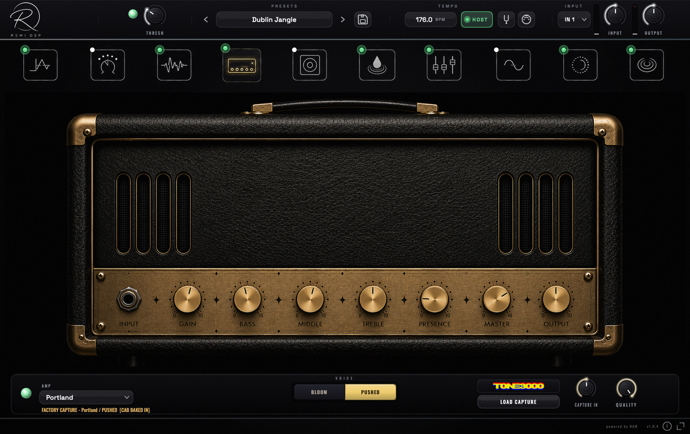

01
Camden
BRITISH CHIME
The chime that built the British Invasion — and the delay-soaked stadiums after it. One chimey British combo, pushed three ways.
- 01Clean
- 02Driven
- 03Max
REMI DSP · MAINE · ALL-IN-ONE GUITAR RIG
NO ACCOUNT REQUIRED


3 AMPS · 9 VOICES · CAPTURED FROM REAL RIGS
Every sound in Maine is captured from a real, mic'd-up rig — the chime, the sag, the way it stiffens under a hard pick and blooms when you back off. Not an impression of an amplifier: a capture of that amplifier's own behaviour, with the cab and the room it was recorded through.
The Plugin
Three amplifiers captured from the real things. A pedalboard that reorders itself. A studio strip that finishes the job — and a tuner that locks.
All of it in one plugin, in any order you like. No account, no iLok, no per-amp upsell.

MAINE v0.3.0 — CAPTURE ENGINE · 44.1–96 kHz
The Amplifiers
Nine voices across three heads, every one captured from a real, mic'd-up rig — and level-matched to each other, so changing amps is a tone change, never a volume jump.
3 HEADS · 9 VOICES · 11 CAPTURES · ONE LEVEL
The Pedalboard
Ten slots, any order — drag a block, rewire the rig. Every pedal hand-drawn, photoreal, built from scratch.


The Studio Strip
Your tone lands finished, not raw: a REMI 4000 console EQ — E-series curves, 18 dB/oct filter — into a 2026 FET compressor with a live VU needle. The end of the chain, the start of a record.
The Cab
A straight impulse-response loader — drop in any IR and set the level. Nothing baked on top, nothing coloured in the way: your cab, exactly as captured.

Specifications
Download
Download, install, and plug in. No account required — the full version, every format.

PORTLAND · BLOOM — THE WHOLE RIG IN ONE WINDOW
MACOS 11+ · INTEL & APPLE SILICON
Download installerOne installer · App + AU + VST3
NO ACCOUNT · NO SIGN-UP